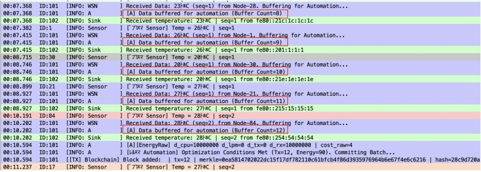
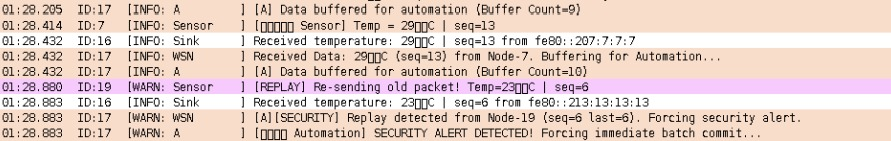
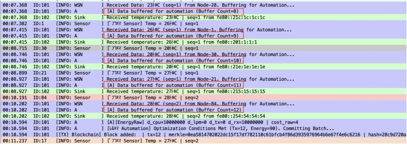
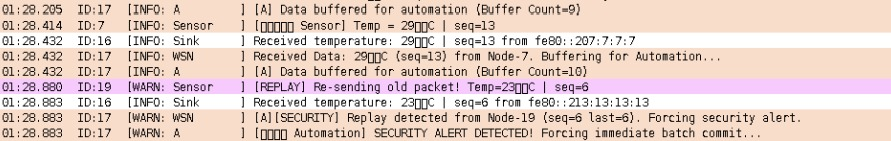

Programming Languages
Java, Python, JavaScript, C, C++, C#, SQL, HTML/CSS, PHP
Frameworks & App Development
React.js, Flask, .NET, ASP.NET, ASP.NET Core, WinForms
Backend & APIs
RESTful APIs, API integration, multithreading,
authentication & role-based access control, MVC architecture
Databases & Cloud
PostgreSQL, SQL, SQLite, Firebase, database design
WSN / IoT Simulation & Embedded
Contiki-NG, Cooja, RPL/UDP communication,
Energest-based energy monitoring, log-driven evaluation
Lightweight Blockchain for WSN
Merkle Tree batching, adaptive block creation
(energy / traffic / security-aware),
data integrity, replay & tamper attack handling
AI / Machine Learning
PyTorch, TensorFlow, YOLO, OpenCV,
computer vision, deep learning
LLM & RAG Systems
Document parsing & cleaning, chunking,
embeddings (Sentence-Transformers),
FAISS vector search, retrieval gating,
prompt design, LLM API integration
CNN & Neural Networks
Convolutional Neural Networks (CNN),
neural network architectures,
feature extraction, training & evaluation,
overfitting prevention, hyperparameter tuning,
feature map visualization
ML Engineering
Data analysis, predictive modeling (Python),
model deployment, real-time inference,
evaluation & error analysis
Game Development
Unity (2D/3D), C# scripting, AI mechanics,
physics system, UI/UX, animation,
TextMesh Pro, NavMesh, particle systems
Tools & Workflow
Git, GitHub, Agile methodology, project planning & documentation


 


